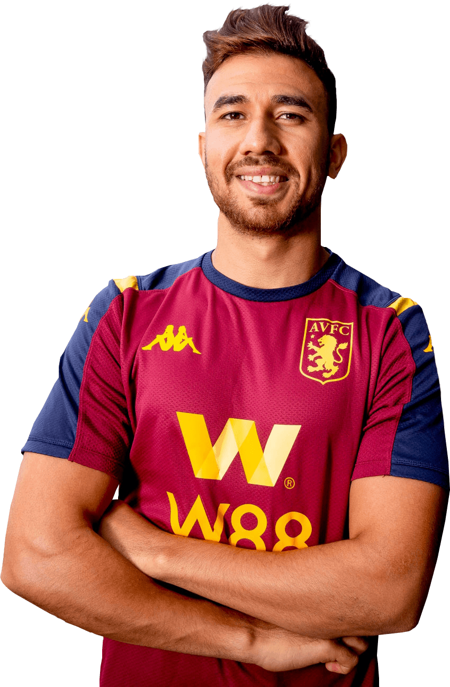

Home
National Teams
Legends
About us
Home
National Teams
Legends
About us
The English Premier League was formed on February 20, 1992
which replaced the English Premier League for the 1992-1993 season.
The Premier League, also known as the English Premier League or the EPL
(legal name: The Football Association Premier League Limited),
is the top level of the English football league system. Contested by 20 clubs,
it operates on a system of promotion and relegation with
the English Football League (EFL).
Seasons run from August to May with each team playing 38 matches
(playing all 19 other teams both home and away).
Most games are played on Saturday and Sunday afternoons.

| The Official Premier League Anthem (Official Audio) |
|---|
| the club | fisrt place | second place |
|---|---|---|
| Manchester united | 20 | 16 |
| Liverpool | 19 | 12 |
| Arsenal | 13 | 8 |
| Everton | 9 | 7 |
| Aston villa | 7 | 10 |
| Chelsea | 6 | 4 |
| Newcastle | 4 | 2 |
| Wolves | 3 | 5 |
| Leed united | 3 | 5 |
| Tottenham hotspur | 2 | 3 |
| Burnley | 2 | 2 |
| Sheffield united | 1 | 2 |
| Leicester city | 1 | 1 |
| Southhampton | - | 1 |
| Watford | - | 1 |
| Season | Name | Club | Number of goals |
|---|---|---|---|
| 2011/2012 | Robin van persie | Arsenal | 30 |
| 2012/2013 | Robin van persie | Manchester united | 26 |
| 2013/2014 | Luis suarez | Liverpool | 31 |
| 2014/2015 | Sergio aguero | Manchester city | 26 |
| 2015/2016 | Harry kane | Tottenham hotspur | 25 |
| 2016/2017 | Harry kane | Tottenham hotspur | 29 |
| 2017/2018 | Mohamed salah | Liverpool | 32 |
| 2018/2019 | Mohamed salah Sadio mane Aubameyang |
Liverpool Liverpool Arsenal |
22 |
| 2019/2020 | jamie vardy | Leicester city | 23 |
| 2020/2021 | Harry kane | Tottenham hotspur | 23 |
For more information about golden boot award click here

Harry Kane has been the top scorer in the last ten seasons (3 times).
This is undoubtedly the No. 1 derby you have to watch this season.
Although this rivalry doesn't have much history—and only became heated last season after City became a title contender—the Manchester derby is an absolute must-watch this season.

With City and United neck-and-neck at the top of the table, the fans are saying that this match will be the title decider. Both sides have dominated their opening fixtures, scoring a whopping 41 goals between them in just six matches. In 2010-11, this fixture produced the goal of the season, so make sure you witness the 2011-12 Manchester derby—no matter what.
The North London derby is as exciting as it gets.
Last season, both North London derbies saw some intense drama on the pitch, heartbreak for some fans and pure happiness for others.

The first time they faced off in 2010-11, at the Emirates, was an incredible match. With the score 2-0 in Arsenal's favour at the half, it seemed as if the Gunners had it in the bag—but three second half goals from Tottenham meant that Spurs came back away from home ensuring their first ever win at the Emirates Stadium.
The second time these two sides squared off, at White Hart Lane, an extremely close 3-3 draw was played out in one of the most fast-paced matches of the season. Ultimately, this game was considered to be one of the best from the 2010-11 season.
Arsenal and Tottenham face off at White Hart Lane this Sunday, so who knows what will happen.
We all know this match simply as Manchester United vs. Liverpool.
Technically this is a derby between two North Western clubs—a Lancashire derby, but nobody really thinks of it as that.
It's a clash between the two most successful clubs in the history of English football, a side with 18 crowns against a side with 19 crowns.

This is a derby that every one should be keeping an eye on—things always get heated in these matches.
Arsenal vs. Chelsea is always a battle of epic proportions.
Last season, home advantage decided both encounters, with Chelsea winning at Stamford Bridge and Arsenal winning at the Emirates.
The Blues' win saw a clever early Drogba goal followed by an absolutely stunning freekick from Alex. 
But Arsenal had revenge in their sights the next time around, picking apart their London rivals with a whopping 3-1 victory.
This is a match about more than just the three points—it's about which club is the pride of London.
Yes, the Merseyside derby has come early this season, so the pressure is on this Sunday.
This is a classic English rivalry between two sides that just can't stand each other, and when the two clubs from Liverpool face off,
you know that drama will ensue. 
Both clubs have a rich history in the Premier League: Liverpool have the second most titles, while Everton have stayed in the top flight longer than any other club.
Liverpool tends to get better Premiership finishes these days, but it's virtually impossible to successfully pred the outcome of a Merseyside derby.

Mohamed Salah Hamed Mahrous Ghaly
(Arabic: محمد صلاح حامد محروس غالي) born 15 June 1992 is an Egyptian professional footballer
who plays as a forward for Premier League club Liverpool and captains the Egypt national team.
Considered one of the best players in the world,he is known for his finishing, dribbling,
and speed.
Salah started his senior career in 2010 playing for Al Mokawloon, departing in 2012 to join Basel,
where he won two Swiss Super League titles. In 2014, Salah joined Chelsea for a reported fee of £11 million,
but limited gametime led to successive loans to Fiorentina and Roma, who later signed him permanently for €15 million.
In 2017, Salah was the subject of a then-club record association football transfer when he signed for Liverpool for
£36.9 million, becoming the most expensive Egyptian player of all time. There, Salah won the Premier League,
the UEFA Champions League, the Premier League Golden Boot twice, and finished third for the Best FIFA Men's Player in 2018 and 2021.
He also holds the record for most Premier League goals scored (32) in a 38-game season, and ranks as Liverpool's ninth-highest all-time top goalscorer.
At international level, Salah represented Egypt at youth level before making his senior debut in 2011. Following his performances at the 2012 Summer Olympics,
he was named CAF Most Promising African Talent of the Year.
Since then, he finished as runner-up in the 2017 and 2021 Africa Cup of Nations and
was top scorer during CAF qualification as Egypt qualified for the 2018 FIFA World Cup. Salah was named CAF African Footballer of the Year
(2017 and 2018), BBC African Footballer of the Year (2017 and 2018), and was selected in the 2017 Africa Cup of Nations Team of the Tournament,
2021 Africa Cup of Nations Team of the Tournament and the CAF Team of the Year on several occasions.
| league | appearance | goals | assists | ||
|---|---|---|---|---|---|
| Premier league | 198 | 137 | 56 | 6 | 0 |
| Serie A | 71 | 35 | 20 | 4 | 1 |
| Egyptian league | 27 | 11 | 0 | 2 | 0 |
| Champions league | 81 | 48 | 11 | 3 | 0 |
| Europa league | 22 | 5 | 5 | 1 | 0 |
| Africa cup of nations | 24 | 8 | 4 | 1 | 0 |
| Africa World Cup Qualifiers | 25 | 11 | 2 | 1 | 0 |
| Total | 448 | 255 | 98 | 18 | 1 |

Mahmoud Ahmed Ibrahim Hassan (Arabic: محمود أحمد إبراهيم حسن)
born 1 October 1994, commonly known as Trézéguet,is an Egyptian professional footballer who plays as a midfielder for Süper
Lig club İstanbul Başakşehir, on loan from Premier League club Aston Villa, and the Egypt national team. His nickname is taken
from the French former footballer David Trezeguet, after his former youth coach noticed similarities between the pair in playing
style and appearance.
He began his career with Al Ahly, breaking into the first team at the age of 18 and helping them win the 2012 CAF Champions League and
2013 CAF Champions League. In 2015, he joined Belgian team Anderlecht and the move was later made permanent.
However, he struggled to establish himself in the first team and spent the following two seasons on loan, first with fellow Belgian side
Mouscron and later Turkish side Kasimpaşa.
With Kasimpaşa, he became the highest scoring Egyptian player in the Turkish top flight in a single
season which prompted the club to make the transfer permanent in 2018.
Having represented Egypt at under-20 and under-23 level, Trézéguet made his full debut for the Egyptian senior side in 2014 at
the age of 19 in a friendly against Kenya.
He was named in Egypt's squad for the 2018 FIFA World Cup, playing in all three group matches.
To date, he has made over 50 appearances for his country's national team, scoring 8 goals.

Mohamed Naser Elsayed Elneny (Arabic: محمد ناصر السيد النني ) born 11 July 1992 is an Egyptian professional footballer who plays as a midfielder for Premier League club Arsenal and the Egypt national team. Elneny began his senior career in the Egyptian Premier League, before moving to Swiss club Basel in January 2013. He won eight honours at Basel, including the Swiss Super League in each of his four seasons. In January 2016, he was transferred to Arsenal. Elneny competed at the 2012 Summer Olympics for the Egyptian under-23 team, and played for the senior team at the 2017, 2019 and 2021 Africa Cup of Nations, as well as the 2018 FIFA World Cup.